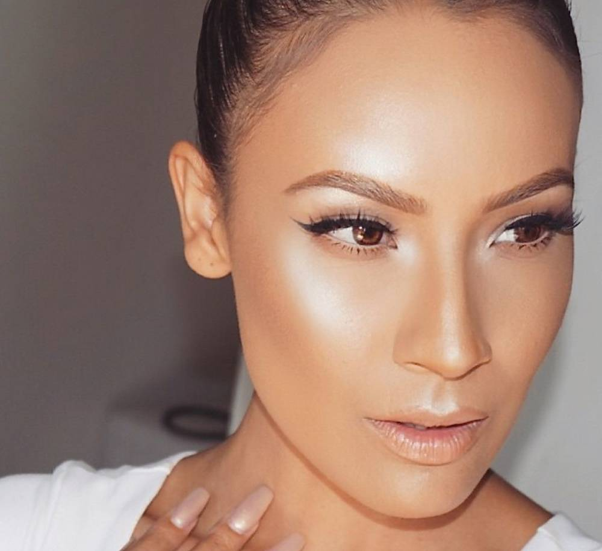

Стробинг
Этот тип макияжа впервые использовали визажисты. Очень долгое время его продолжали использовать только в качестве
подиумного мэйка. Стробинг менял внешний вид лица и привлекал к себе взгляды зрителей. С одной стороны, такой макияж
казался незаметным и естественным, но с другой делал черты лица красивыми и максимально выразительными.
Секрет этого эффектного эксклюзивного макияжа очень быстро распространился среди визажистов. Так что технику стробинга начали
использовать для корректировки черт лица многие знаменитости. Такой макияж очень сексуальный и эффектный.

Макияж в таком стиле позволяет получить эффект здоровой и сияющей от природы кожи. Для того чтобы его
вам понадобится пушистая кисточка и качественный хайлайтер. Вам, в целом, даже не понадобится много практиковаться.
Потренируйтесь немного, и вы с легкостью сможете создавать эффектный макияж в стиле стробинг.
При помощи хайлайтера вы сможете выделять нужные зоны, которые будут смотреться хорошо. Сияние на коже акцентирует внимание
на этой части лица. Другие же зоны этот продукт сможет успешно скрыть. Приятно радует и то, что на создание такого макияжа
тратится достаточно мало времени. А еще вы можете краситься таким способом и днем, и вечером вне зависимости от ситуации.
Даже если вам кажется, что данный мэйк смотрится вульгарно, это совсем не так. На деле все это выглядит вполне естественно,
если сделано правильно и в соответствии с инструкцией.
{% endblock %}